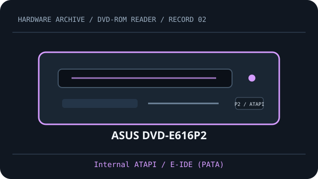

[ DVD-ROM READERS // IDENTIFIED MODEL ]
ASUS DVD-E616P2
Read-only DVD-ROM/video and CD media support. Rated maximums and host setup below are specific to ASUS DVD-E616P2; verify the complete OEM suffix and firmware on the label.

IDENTIFICATION: Compare the full model, suffix, OEM part number and firmware to the cited documentation before fitting, servicing, or attempting preservation reads.
Documented specifications
| Catalog subcategory | DVD-ROM readers (read-only model class) |
|---|---|
| Exact model | ASUS DVD-E616P2 |
| DVD read formats | DVD-ROM, DVD-Video |
| DVD read speed | up to 16×; vendor maximum, not a sustained guarantee |
| CD read formats | CD-ROM, CD-DA (audio CD) |
| CD read speed | up to 48×; vendor maximum, media and mode dependent |
| Interface | Internal ATAPI / E-IDE (PATA) |
| Bay and mechanism | 5.25-inch half-height tray-load bay; measure chassis depth, faceplate and mounting points before installation. |
| Host compatibility | An ATAPI-capable parallel-ATA host and standard 40-pin IDE data cable; operating-system ATAPI support is required. DVD-Video playback needs compatible decoding software. |
| Firmware, region and jumper caveats | Set the rear Master/Slave/Cable Select jumper to match the host cable and other device; verify the silk-screened label and P2 manual, not a P1/OEM default. |
Host fit & preservation notes
- An ATAPI-capable parallel-ATA host and standard 40-pin IDE data cable; operating-system ATAPI support is required. DVD-Video playback needs compatible decoding software.
- Set the rear Master/Slave/Cable Select jumper to match the host cable and other device; verify the silk-screened label and P2 manual, not a P1/OEM default.
- Read ratings do not imply write capability. Treat writable/rewritable media as supported only when this exact model manual explicitly lists it.
- For imaging, record the complete drive label, OEM suffix, firmware, host controller, software, disc type and read errors; retain checksummed images and logs.
- Handle discs by the edge or center hole; use a clean case in cool, dry storage away from direct sunlight. Avoid adhesive labels, abrasives and undocumented polishing/solvents.
Optical media access is sensitive to disc condition, firmware and host software. A published peak “×” rating is a format-specific maximum, not guaranteed throughput.
Model documentation
- ASUS DVD-E616P2 user manual (ManualsLib)Model-specific manual covering product identity, installation and technical specifications.
- ASUS DVD-E616P2 manufacturer manual (ASUS support)Model-specific manual index; use the manual matching the full P2 product label and revision.